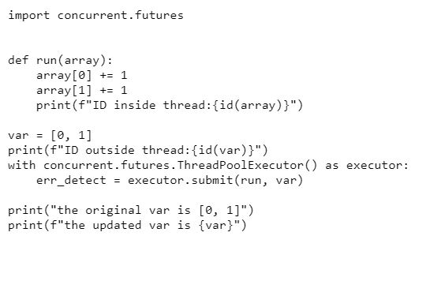
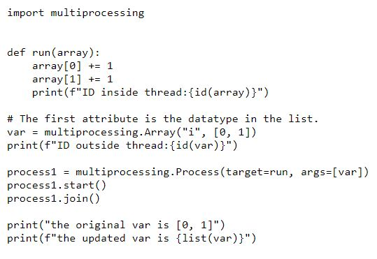

In this section I will talk about what data sharing and speed up in processes and threads. It is important to know what data sharg is, Data sharing is the way to share data between threads and process.
The sharing of data between threads one of the easiest ways to share data between threads is to use muatable objects i will show this using python.
When the mutable object in the global scope is created, such as a list or dictionary, it shares the same memory address if you use it as a thread argument,
which is known as a “Pointer” in languages like c and c++. we can easily adjust the data anytime we call the variable.

The above picture is a python code example of a sharing data between threads using a muatable object.
The result that the program gives is two identical ID numbers while the global list has also changed, if we used a dictionary instead of a list i would have given us the same result.
using muatable objects is the easiest way as there are no pointers in python.
Problems in data sharing are mainly when one or more threads are modyfying the data.One of the most common problems is broken invariants. an example of this is if one thread is reading the doubly linked list while another is removing a node, it’s quite possible for the reading thread to see the list with a node only partially removed, so the invariant is broken.in order to fix problem like this we have to make sure that the threads are controlled with which data they can access
When data sharing between pointers a way to do it is to use interthread communication. The simplest way to do this is to create shared objects using array in mulyiprocesses module, and the shared object can be inherited by the child process.the use of the concurrent module cannot be used as it does not suport data sharing between process so the use of multiprossesing is required as shown in the code below.
